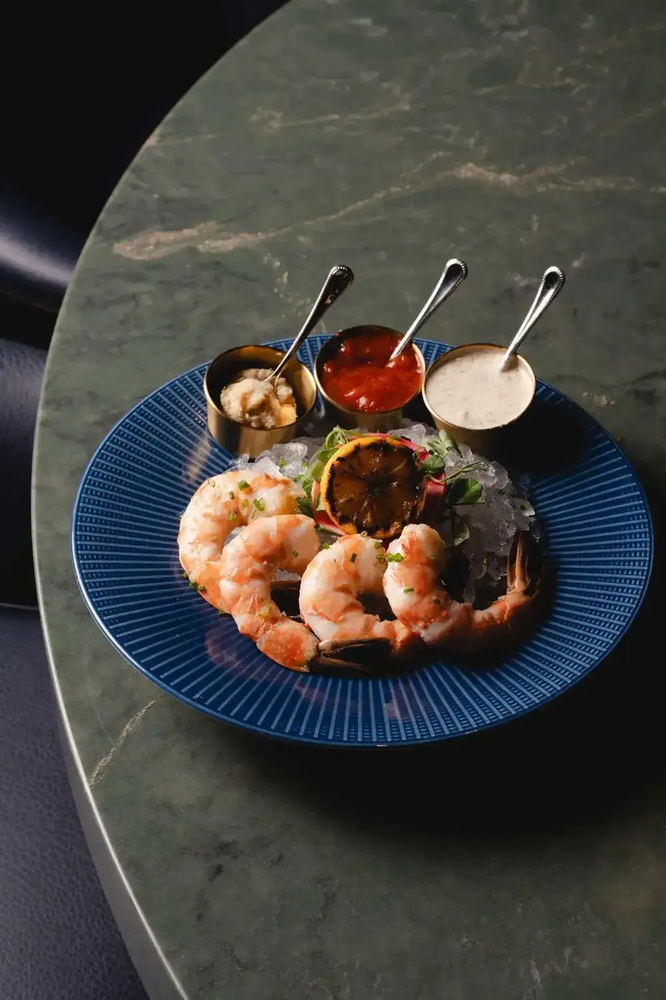
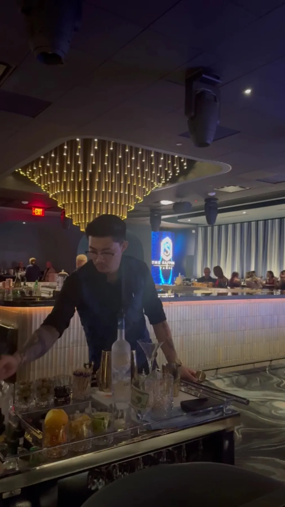

Chilled and heated small plates
Oysters, jumbo lump crab cocktail, beef tenderloin carpaccio, seared scallops and filet mignon sliders, one guest's best mini steak.
Supper club & lounge · Tampa, FL

Live bands, DJs and tableside flair, with steaks, seafood and crafted cocktails, inspired by the supper clubs of the 1950s.
HoursMon · Closed4410 W Boy Scout Blvd, Tampa, FL 33607
An evening worth dressing for
Chilled and heated small plates, steaks, cocktails and caviar service.
Oysters, jumbo lump crab cocktail, beef tenderloin carpaccio, seared scallops and filet mignon sliders, one guest's best mini steak.

Angus filets and ribeyes, lamb chops, halibut with clams and chorizo, and sauces from cabernet reduction to bone marrow butter.

Bar staff who work the room, a bottle service list and a late night menu for the hours after the band starts.


4.8 ★ · 485 Google reviews
I went to Sapphire on a Friday to celebrate a friend's birthday. There were 6 of us. We had a fantastic time. We danced, was serenaded by the saxophonist and entertained by the band and dancers. Our server was exceptional. He helped arrange a surprise tour as a birthday gift to my friend. 5 Stars hands down! See for yourself
This place is awesome! We had great seats at the bar, with Joel as our bar guy. Joel and his mate worked that bar like … well they were fantastic. The food was outstanding - Wagu sliders, the best mini steak I’ve ever had. Scallops with whatever that sauce was simply stunning. Great drinks and just as good entertainment. This is for me the most outstanding place in town.
Rick and Geneva were the most amazing waitstaff we have ever had in our many dining experiences here in Tampa. We personally met two of the owners and they were absolutely incredible. Taro, was absolutely incredible in that he personally took time out of his very busy night to take our picture in multiple places to get the best pictures. Steven, another owner, was very nice and very pleasant to speak with.
Hecho aquí
The Sapphire reimagines the supper clubs of the 1950s through a contemporary lens, on West Boy Scout Boulevard in Tampa. Live bands, DJs and tableside flair share the room with distinctive private dining suites.
Reviewers talk about the people as much as the room: waitstaff named Rick and Geneva, Joel behind the bar, Christian who toured a party of seven through the venue, and owners who stop by to take your picture.

Ven por una
4410 W Boy Scout Blvd, Tampa, FL 33607
Reserve a table if you want to sit, guests say walk-ins can wait a long time on a Saturday. Valet parking is $6 per car. Self-parking is not available.